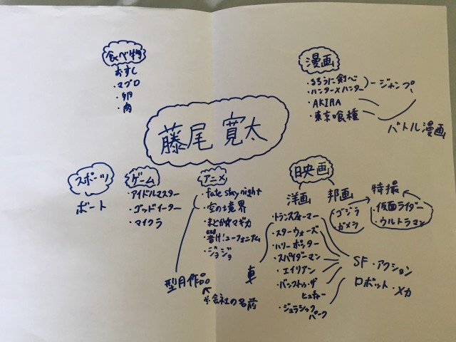
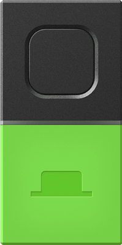
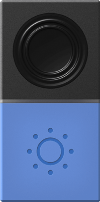
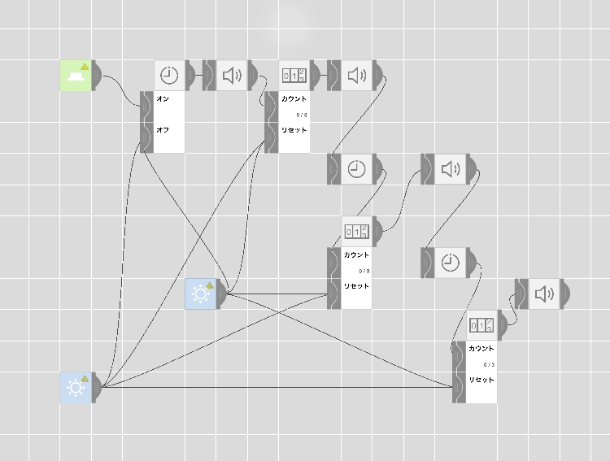

マインドマップ作成
自分が描いたマインドマップ

考察など
自分のマインドマップを見てアニメや漫画といった2次元
的なものが好きということいがマップを見て分かることだが、結果
は自分に関することなのでだいたいの予想は付いていた。
この授業
の面白っかたところは他の人のマインドマップが見れることだった、
その人の知らないことがたくさん書かれていたのでその人の好きなもの
など色々知ることができた。
MESH
MESHを使って新しいサービスを生み出すことがこの授業の
課題で、僕たちの班は絶対に起きれると思われる目覚まし時計
を製作することにした。
動機
班のメンバーは、趣味に没頭しすぎて夜更かししてしまい、朝が起きれないこと
が一つの共通点だったので、夜更かししても絶対に起きれる目覚まし時計を
作ることにした。
使ったMESH
 
作ったプログラム
